Introductie
In dit hoofdstuk van Opbouwwerk in Rotterdam wordt, aan de hand van documenten en verslagen, een reconstructie gemaakt van de ontwikkeling van het opbouwwerk in de jaren 60 en 70.
De eerste opbouwwerkers in Rotterdam gaan in 1968 aan het werk bij Sociaal Wijkopbouw Organen in nieuwbouwwijken.
Oude stadswijken zijn in de jaren 60 ‘saneringswijken’. Plan is om de woningen te slopen voor verkeersdoorbraken, kantoren en winkels. Bewoners moeten verhuizen naar de nieuwe woonwijken aan de randen van de stad.
Begin jaren 70 ontstaat protest van bewoners en studenten tegen de plannen voor kaalslag. De aktiegroepen krijgen daarbij steun van club- en buurthuizen.
Ook binnen de PvdA, de grootste partij in Rotterdam, groeit verzet tegen het saneringsbeleid. De nieuwe wethouder volkshuisvesting Jan van der Ploeg sluit in 1974 een overeenkomst met de aktiegroepen over stadsvernieuwing. Ze krijgen directe invloed op het maken van plannen voor vernieuwing van de wijk, met het recht op ondersteuning door zelf gekozen deskundigen.
Stadsvernieuwing wordt een demokratiseringsproces. De aktiegroepen veranderen in bewonersorganisaties en worden overleg- en onderhandelingspartner van de gemeente.
Opbouwwerkers gaan in de jaren 70 samenwerken met bewonersorganisaties, ze gaan werken ‘in opdracht van bewoners’.
Jan Vaessen, een van de eerste opbouwwerkers in Rotterdam en van 1968 tot 1995 verbonden aan het Rotterdamse opbouwwerk, leverde een grote bijdrage aan dit hoofdstuk.
NB. De spelling verandert in de loop van de jaren. Actie wordt ‘aktie’, methodisch wordt in de jaren 70 geschreven als ‘metodies’. De verschillende spellingen heb ik ongewijzigd gelaten.
Juni 2019
Anne van Veenen
Overzicht
- Jan Vaessen gaat in 1968 als een van de eerste opbouwwerkers aan het werk bij het Sociaal Wijk Opbouworgaan Prins Alexander. (1)
- De ‘sociale wijkopbouw’ heeft Rotterdamse wortels en promotors, vanaf 1965 gaat het ministerie van CRM ‘samenlevingsopbouw’ financieren in steden. (2)
- Rotterdam stimuleert de vorming van ‘wijkorganen’, opbouwwerk directeur Maso analyseert een nieuwe fenomeen: de ‘sanerings-aktiegroep’. (3)
- De jonge beleidssocioloog Bram Peper houdt de ontwikkeling van het opbouwwerk als nieuwe tak van overheidsbeleid kritisch tegen het licht. (4)
- Bewoners van Crooswijk en het Oude Westen voeren aktie tegen de verkrotting en dreigende sloop van hun woningen. Bewoners krijgen steun van kaderleden van de arbeidersbeweging, studenten en buurthuizen. (5)
- In 1974 sluit de nieuwe wethouder Jan van der Ploeg een overeenkomst met de aktiegroepen over de aanpak van de woningverbetering. Bewonersorganisaties krijgen medezeggenschap, met steun van zelf gekozen deskundigen. Opbouwwerkers sluiten zich aan. (6)
- Bewoners krijgen zeggenschap over het opbouwwerk. Opbouwwerkers gaan in discussie over hun positie tussen ‘beroepskracht’ en ‘vrijgestelde’. (7)
- Jan Vaessen blikt terug op het ontstaan van een professionele organisatie voor opbouwwerk ten dienste van bewoners. (8)
1. Sociaal Wijkopbouw Orgaan Alexanderpolder
Jan Vaessen is een van de eerste opbouwwerkers in Rotterdam. Hij wordt in 1968 wijkopbouw-consulent voor het Sociaal Wijkopbouw Orgaan, SWO Alexanderpolder.
De SWO’s zijn een nieuw fenomeen, ze zijn bedoeld als platform voor bewoners, verenigingen en instellingen die de gemeente kunnen adviseren over voorzieningen die nodig zijn in een wijk. De nieuwe wijkorganen zijn een alternatief voor de wijkraden met vertegenwoordigers van politieke partijen die in de naoorlogse periode werden gevormd.
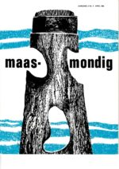Het blad Maasmondig van de Raad voor Maatschappelijk Welzijn brengt in 1969 een themanummer uit dat gewijd is aan het nieuwe ‘sociaal wijkopbouwwerk’ in Alexanderpolder. (Sociaal opbouwwerk in Alexanderpolder, Maasmondig 2/4 april 1969)
Op een informatiebijeenkomst over het Sociaal Wijkopbouw Orgaan in Alexanderpolder in 1965 komen 400 bewoners af, een kwart meldt zich aan om mee te doen aan de activiteiten van het SWO. De eerste vrijevestigingswoningen in de polder staan in een zandvlakte, het ontbreekt aan een busverbinding naar de stad. Steen des aanstoots zijn ook grote vuilcontainers langs de straat waarin bewoners hun huisvuil moeten deponeren.
Het SWO doet via enquêtes onder bewoners een zelfonderzoek in de wijk. De opbouwwerker treft stapels ingevulde formulieren aan bij zijn komst. ‘Welke wensen gaan achter de cijfers schuil?’ vraagt hij zich af. ‘Meer contactmogelijkheden, meer informatie over dienstverlenende instellingen, problemen van flatbewoning, diversiteit in ontspanningsmogelijkheden, eenzaamheid, etc.’ Het behoeftepatroon blijkt niet eenduidig, om daarover meer duidelijkheid te krijgen is nodig ‘dat mensen daar op een genuanceerde manier zelf in mee kunnen praten. En daar moet ook formeel de mogelijkheid voor bestaan. Dat versta ik dus onder democratisering in het kader van het opbouwwerk.’
Uit de enquête blijkt ook een tekort aan ruimtes op niet commerciële basis voor onderlinge contacten en ‘een niet rendabel gebruik van de kerkruimten’. Een van de initiatieven is een burenhulpcentrale.
De opbouwwerker ziet het niet als zijn taak om zelf te werken aan het tot stand komen van voorzieningen. Zijn rol is een andere: ‘de opbouwwerker begeleidt de wijkbewoners, hij helpt hen inzicht te krijgen in de eigen situatie, bevordert een goed overleg en biedt waar nodig alle mogelijk hulp’. In Alexander zijn mensen bij elkaar gaan zitten aan de hand van concrete punten. ‘Ze kregen het voor elkaar de containers die in de wijk geplaatst waren te laten verwijderen. Dat was het begin van inspraak en actie. (…) Het wijkorgaan functioneert als een pressure-groep. De bestuursvergadering met vertegenwoordigers van verenigingen en instellingen is een soort permanente hearing om de wensen van de bevolking naar voren te laten komen en er is altijd een kerngroep van mensen die probeerden daar wat aan te doen.’
De opbouwwerker streeft naar ‘bewustwording’. Mensen zijn niet gewend inspraak te krijgen, is zijn ervaring. ‘Het komt voor veel mensen als iets nieuws. Ik dacht dat het ook tot de taak van de opbouwwerker behoorde om de mensen daarvoor rijp te maken.’
Vaessen realiseert zich dat het enthousiasme van het begin, met veel mensen en grote vergaderingen, eindig is. Daar komt bij dat de positie van het SWO naar gemeente, bewoners en instellingen niet is uitgekristalliseerd. Dit blijkt als bewoners van het Jacob van Campenplein klagen bij de gemeente over parkeeroverlast. Binnen het SWO ontstaat een discussie: kunnen bewoners rechtstreeks naar de gemeente met klachten of moet dat via het SWO?
De opbouwwerker ziet zichzelf als ‘kritisch geweten’ van het wijkopbouworgaan. Hij plaatst in een discussienota enkele kanttekeningen bij het functioneren van de organisatie. Vertegenwoordigers van kerken, verenigingen, buurten en instellingen maken deel uit van een Algemeen Bestuur, dat 50 leden telt. Centrum Alexander, het buurtcentrum, speelt een prominente rol. Er zijn contacten met 41 verenigingen, van de Ned. Veren. Huisvrouwen, Ver. Kontakt PvdA, R.K. par. Bestuur, Open Deur Commissie, Oranje-Groene Kruis, tot Aktie Moeders voor Moeders. Er is een Dagelijks Bestuur met sekties bestuurlijke zaken voor advies aan de gemeente, planologie, sport en recreatie, akties, C 70, vakantiebesteding. Van de ruim 100 groeperingen in de wijk participeert de helft in het SWO. De opbouwwerker signaleert dat buitenlanders, werkzoekenden, invaliden, huisvrouwen en jeugdigen van 12-16 jaar onvoldoende zijn gerepresenteerd binnen het Algemeen Bestuur.
De sekties waarin groeperingen samenwerken hebben de neiging ‘bestuurtje te spelen’, met weinig informatie naar buiten toe, ziet de opbouwwerker. Hij bepleit dat bewoners die het meest betrokken zijn bij een kwestie ook de belangrijkste stem hebben. Zo kunnen rond diverse onderwerpen ‘aktiegroepen’ ontstaan die snel resultaat boeken. Het Dagelijks Bestuur als spil in de organisatie zal vooral een service-verlenende functie moeten vervullen. De rol van het DB is om te zorgen voor een goede communicatie tussen groepen, een prioriteitenlijst vast te stellen en de vergaderingen van het Algemeen Bestuur voor te bereiden.
Niet iedereen binnen het SWO is blij met de kanttekeningen van de opbouwwerker. Reactie is: doen we het niet goed?
De opbouwwerker kwam bij ons wat plotseling uit de lucht rollen, zegt SWO-voorzitter Verschoor (in het dagelijks leven directeur van het Vrije Volk).noot
Maso, ir., (1973) Zeven jaren opbouwwerk, Maasmondig 10/8
Hij is van mening dat een gemeenschap om een opbouwwerker moet verzoeken. ‘Indien hij niet met open armen wordt ontvangen, lijken positieve resultaten onmogelijk.’ Hij signaleert ook een ‘rol-onduidelijkheid’, de neutraliteit van de opbouwwerker ziet hij als ‘een avontuur op zichzelf’. Oud SWO-voorzitter Hoogeveen waarschuwt dat het SWO juist door haar grote kracht en vele mogelijkheden het gevaar loopt ‘zichzelf voorbij te streven’, door in haar enthousiasme alles zelf te willen organiseren. ‘De eerste taak van een SWO moet echter blijven bestaan in het stimuleren van andere mensen en groepen, het bijeenbrengen en coördineren hiervan, het bieden van mogelijkheden om anderen aktief te doen zijn.’
De discussies die binnen het SWO Alexanderpolder worden gevoerd zullen in de jaren 70 en 80 voortduren.
Is een SWO of wijkorgaan een inspraakorgaan, met een wijkbestuur dat de mening van de wijk naar voren brengt? Of is het vooral een participatie-orgaan dat groepen bewoners die direct betrokken zijn bij een situatie stimuleert hun mening te geven en initiatief te nemen?
En: wat is de positie van de opbouwwerker binnen een wijkorgaan, wie is zijn/haar opdrachtgever, kan een opbouwwerker fungeren als ‘kritisch geweten’ die het democratisch karakter van de organisatie bewaakt?
2. Sociale wijkopbouw
Naast het SWO Alexanderpolder gaan in 1965 nog vier andere wijkopbouworganen van start in nieuwe stadswijken. Collega’s van Jan Vaessen worden in 1968 Wil van Vessem in Lombardijen, Henk van der Linde in Hoogvliet en Ad IJzenbrandt in Zuidwijk. (Overigens: ‘De opbouwwerkers’ van het eerste uur waren bouwvakkers…)
De ‘sociale wijkopbouw’ met wijkopbouwwerkers die in de jaren 60 aanvangt sluit aan bij een al langer bestaande traditie van ‘gemeenschapsvorming’ in wijken in het naoorlogse Rotterdam.
In 1944 richt een groep notabelen met havenondernemer J. Th. Backx en CHU raadslid van Walsum ‘De Rotterdamse Gemeenschap’ op. Ze willen bevorderen dat de nieuwe woonwijken die na de oorlog worden gebouwd ook een sociaal verband vormen, met Gemeenschappen die gezamenlijke initiatieven stimuleren. Zo kan tegenwicht worden geboden aan de anonimiteit en normloosheid van het stadse leven. Deelname aan het sociale leven in de wijk moet ook de integratie bevorderen van de arbeiders uit Brabant en Friesland die naar Rotterdam komen. De ‘wijkgedachte’ krijgt een stedenbouwkundige vertaling bij de ontwikkeling van Zuidwijk, Pendrecht en Prins Alexander. Buurten krijgen een mix van leeftijdsgroepen, buurtwinkels zijn ontmoetingsplekken en publieke groenstroken tussen de flats nodigen uit tot gezamenlijke activiteit van bewoners. noot
Reijndorp A., (1994) De sociale ambities van het naoorlogse bouwen, in: Reijndorp A., Ven van der H., Een reuze vooruitgang, utopie en praktijk in de Zuidelijke Tuinsteden van Rotterdam, Uitgeverij 010 Rotterdam
De Zuidwijkse Gemeenschap stimuleert in de jaren 50 het verenigingsleven en de samenwerking tussen de verschillende kerkelijke en levensbeschouwelijke groeperingen. Woningstichting Tuinstad Zuidwijk organiseert huurders in bewonerscommissies die ook activiteiten in de buurt organiseren. Een buurtwerker van het Rotterdams Centrum voor Sociaal-Cultureel Vormingswerk ondersteunt de Zuidwijkse Gemeenschap.
Er is ook kritiek. Gemeenschapsvorming in een wijk botst met het streven van stadsbewoners naar ‘zelfgekozen contacten’, stelt socioloog van Doorn-Jansen. Ze doet in 1955 in opdracht van het R.C.V. onderzoek in Zuidwijk. De koppeling van de wijkgemeenschap en huurdersvereniging aan de woningstichting noemt ze ‘een gevaarlijk experiment’, een wijkraad acht de onderzoeker een meer democratische vorm van participatie dan bewonerscommissies. noot
Tot de kerkelijke leiders in Zuidwijk behoort ds. A. J. Janssens, die als ‘bouw-dominee’ opdracht heeft tot het stichten van een kerkgebouw en de opbouw van een gereformeerde gemeente. Johan Janssens, de latere opbouwwerker en Opzoomer-directeur, maakt mee dat gemeenteleden op Koninginnedag in de pastorie stapels pannenkoeken bakken en het plein voor de kerk omtoveren tot feestterrein.
In geannexeerde stadsdelen worden in 1947 wijkraden ingesteld, samengesteld uit vertegenwoordigers van politieke partijen. Werkwijze en bevoegdheden van wijkraden zijn een terugkerend onderwerp van discussie in de gemeenteraad.
De Beleids- en studiecommissie Sociale Wijkopbouw, de commissie Schut, adviseert in 1960 naar aanleiding van de afnemende belangstelling voor deelname in wijkraden om ‘sociale wijkopbouw’ te bevorderen, via wijkopbouworganen waarin bestuursleden van verenigingen participeren, ondersteund door wijkopbouw-consulenten. Doelen van dit ‘sociaal opbouwwerk’ zijn ‘milieu-beïnvloeding’ en ‘relatie-opbouw’. Schut (CHU) krijgt steun van KVP-raadslid Couwenberg, de PvdA kiest voor participatie via politieke partijen. noot
Het oprichten van Sociaal Wijkopbouw Organen in 1965 en van de bijbehorende Stichting Sociaal Opbouwwerk had dus in Rotterdam een voorgeschiedenis. Het sociaal wijkopbouwwerk wordt een gemeenschappelijk project van gemeente en het ministerie van CRM. De Rijksbijdrage regeling Samenlevingsopbouw van 1963 maakt financiering mogelijk van ‘sociale wijkopbouw’ in steden, gericht op het tot stand brengen van sociaal-culturele voorzieningen met participatie vanuit de bevolking. Kerkelijke instellingen en politieke partijen verliezen aanhang en kunnen niet langer de behoeften aan ‘welzijn’ articuleren.
De ‘sociale planning’ en ‘samenlevingsopbouw’ die eerder in ontwikkelingsgebieden op het platteland werd ingezet wordt daarmee ook in steden geïntroduceerd. noot
De Stichting Sociaal Opbouwwerk heeft ten doel ‘de opbouw van de samenleving te bevorderen in het bijzonder in nieuwe stadswijken en het bevorderen waar gewenst van wijkopbouworganen’. Voorts ‘het bevorderen van de aanpassing van nieuwe bewoners van de stedelijke samenleving, in het bijzonder van nieuwe bewoners die zich in de nieuwe stadswijken vestigen’. Ten aanzien van bewoners van oude stadswijken is de doelstelling ‘het behartigen van de sociale belangen van hen, die de gevolgen van stedelijke saneringsmaatregelen ondervinden’. De sloop van oude wijken is voor de initiatiefnemers voor samenlevingsopbouw in Rotterdam in de jaren 60 een gegeven, de moderne woonwijken liggen aan de randen van de stad.
De Stichting Sociaal Opbouwwerk wordt in 1967 omgezet in de Hoofdafdeling Opbouwwerk van de Raad voor Maatschappelijk Welzijn, overlegorgaan van de gemeente en de levensbeschouwelijke koepels voor sociaal werk. In het bestuur zitten wethouder de G. Z. de Vos, hoofden van diensten en directeuren van de welzijnskoepels. De RMW wordt werkgever van de wijkopbouwwerkers.
Wethouder George de Vos (KVP) hoort tot de promotors van het wijkopbouwwerk in Rotterdam. Hij is in de periode 1958 tot 1974 wethouder van Sociale Zaken en van Wijkaangelegenheden. In een afscheidsinterview in 1974 vertelt de Vos hij dat hij als voorzitter van de Katholieke Arbeidersvereniging in Rotterdam een discussie meemaakte over het verloren gaan van de Rotterdamse Gemeenschap. noot
‘Ik ben toen in het destijds pas verschenen standaardwerk van Ross over community organization gedoken (Murray Ross, Gemeenschapsorganisatie, grondbeginselen en theorie, 1957), want ik wist daar niets van. Ook Van der Ploeg (toen directeur van de Sociale Academie) heeft mij er het e.e.a. over verteld. Mijn vaste overtuiging was, dat je door decentralisatie door te voeren veel meer mensen kunt bereiken en kunt laten meespelen. Waar we behoefte aan hebben, zijn mensen die enerzijds de organisatie op gang weten te brengen en anderzijds de mensen toch in staat stellen te doen en te laten wat ze willen. Dit was eigenlijk de eerste discussie over opbouwwerk.’
‘In 1963/64 hebben we gezegd: nu moeten we echt aan het opbouwwerk beginnen. De toenmalige burgemeester zag het echter niet zo zitten. Later kreeg je de vraag of Thomassen het wel zou willen. Toen kreeg je in het College de moeilijkheid van wel doen/niet doen. Dit was snel opgelost toen v.d. Ploeg wethouder werd. Toen kreeg ik in het College ook duidelijke steun voor de gedachte. Maar dat het opbouwwerk in de stad kon meespelen was niet eerder dan in 1967.’
Broedplaats voor opbouwwerk in Rotterdam is de Academie voor Sociale Wetenschappen en Maatschappelijk Werk, met directeur drs. J.G. van der Ploeg.
In 1964 gaat aan de Academie een kadercursus samenlevingsopbouw van start waar sociaal cultureel werkers en maatschappelijk werkers zich kunnen omscholen tot opbouwwerker. In de jaren 70 biedt de academie een specialisatie opbouwwerk voor sociaal-cultureel werkers.
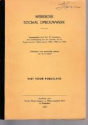Het proces van sociale wijkopbouw wordt door Van der Ploeg uiteengelegd in ‘diagnose’, ‘motivering’, ‘planning’, ‘actie’ en ‘evaluatie’. Bijbehorende methodieken zijn het maken van een sociale kaart, een community self-servey en opbouw-campagnes. (Werkboek Sociaal Opbouwwerk Kadercursus Opbouwwerk 1965, 1966, en 1967, Academie voor Sociaal en Maatschappelijk Werk te Rotterdam, 1967)
Bij het formuleren van de doelstelling van sociale wijkopbouw treedt Van der Ploeg in de voetsporen van de commissie Schut. Hij onderscheidt het opbouwwerk van het maatschappelijk werk: ‘In het maatschappelijk werk ligt het accent op het socio-therapeutisch helpen in maatschappelijke nood, terwijl het in het territoriale sociaal opbouwwerk gaat om milieu-beïnvloeding en relatie-opbouw in communities waarvan men niet kan zeggen, dat zij in maatschappelijke nood verkeren.’
Doel van sociale wijkopbouw is ‘het opbouwen van relaties tussen integratiekaders, gericht op het dragen van gezamenlijke verantwoordelijkheid voor het geheel daar, waar dat mogelijk is, opdat een toereikende mate van eendrachtig samenwerken wordt bereikt.’
In de Diesrede in 1965 stelt hij de vraag hoe het komt het dit opbouwwerk zo snel wortel schiet. ‘Het antwoord op deze vraag is te zoeken in onze huidige mensbeschouwing (..), in een mensbeeld waarin mens-zijn is een met anderen-zijn, hetgeen èn de eigenheid van mens en groep èn de gezamenlijke verantwoordelijkheid voor het geheel accentueert.’ noot
Centraal beginsel voor Van der Ploeg is ‘het dragen van gezamenlijke verantwoordelijkheid’. Hij maakte na de oorlog als lid van de Ned. Herv. Kerk de overstap naar de Partij van de Arbeid. De ‘doorbraak-socialisten’ streefden naar nieuwe politieke verhoudingen in het verzuilde Nederland. Binnen de Nederlands Volksbeweging NVB en het Nederlands Gesprekcentrum zal Van der Ploeg zich inzetten voor de dialoog tussen verschillende levensbeschouwelijke stromingen.
Jan Vaessen schoolt zich via de kadercursus samenlevingsopbouw om van kapelaan tot opbouwwerker. noot
Maso, ir., (1973) Zeven jaren opbouwwerk, Maasmondig 10/8
Methodiekdocent aan de Sociale Academie wordt ir. S. Maso. Hij wordt in 1965 directeur Opbouwwerk. Maso was eerder werkzaam bij het planbureau voor sociale gebiedsontwikkeling in N.O.-Overijssel. ‘Daar is mijn praktijk van het opbouwwerk eigenlijk begonnen’, schrijft hij. Daarna werkte hij bij het Planbureau in Suriname.
Bij het ontstaan van het wijkopbouwwerk in Rotterdam in de jaren 60 komen verschillende ontwikkelingen samen. In de opzet van nieuwe naoorlogse woonwijken wordt de wijk een sociaal domein voor participatie en integratie van bewoners. Naast politiek samengestelde wijkraden worden in 1960 voorstellen ontwikkeld voor ‘sociale wijkopbouw’, ondersteund door ‘wijkopbouw-consulenten’. De Rijksbijdrageregeling Samenlevingsopbouw van CRM van 1963 biedt financieringsmogelijkheden voor ‘community development’ en ’community work’ in steden. Rotterdam benut de regeling in 1965 voor de ontwikkeling van sociaal wijkopbouworganen, ondersteund door ‘wijkopbouwwerkers’. Wethouder de Vos omschrijft deze nieuwe functionarissen als ‘mensen die enerzijds de organisatie op gang weten te brengen en anderzijds de mensen toch in staat stellen te doen en te laten wat ze willen’.
3. Initiatiefcomité ’s, wijkorganen en aktiegroepen
Wethouder de Vos streeft naar een compromis tussen pleitbezorgers van wijkraden en van sociaal wijkopbouworganen met de beleidsnota Toekomst van het Rotterdamse Wijkbestel (1968). Wijkopbouworganen kunnen een sectie bestuurlijke zaken vormen met vertegenwoordigers van politieke partijen, bewoners van oude wijken kunnen kiezen of ze een wijkraad willen of een wijkopbouworgaan. Het werkterrein van opbouwwerkers wordt uitgebreid van naoorlogse wijken tot de oude stadswijken.
Eind jaren 60 ontstaan ‘initiatiefcomités’ in oude wijken, vaak met steun van het opbouwwerk. Een comité kan vervolgens ‘voorlopig erkend wijkorgaan’ worden en zo in aanmerking komen voor subsidie voor de kosten van huisvesting, organisatie en administratieve ondersteuning.
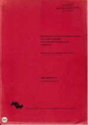De afdeling Opbouwwerk van de RMW en de gemeentelijke secretarie-afdeling Wijkaangelegenheden organiseren in 1970 een cursus over sociale wijkopbouw voor nieuwe bestuursleden van wijkorganen. (Introductieavonden over sociale wijkopbouw voor bestuurders van wijkorganen te Rotterdam 1970/1971, Hoofdafdeling Opbouwwerk RMW 1971)
Onderwerpen zijn o.a. de structuur van een wijkorgaan, het maken van een sociale kaart en ‘sociale aktie’, een nieuw verschijnsel.
Enkele citaten uit het cursus-verslag:
‘Het is niet eenvoudig een wijkorgaan samen te stellen, dat representatief is voor een wijk en tevens een werkzame groep vormt. Vertegenwoordiging via de verschillende geloofsovertuigingen, Nederlands-Hervormd, Rooms-Katholiek en Humanistisch Verbond, stuitte op verzet. Het wijkorgaan Vreewijk werkt met secties voor sport, jeugd, maatschappelijke werk waarin vertegenwoordigers uit verenigingen en instellingen samenwerken, aangevuld met een sectie vakantiebesteding. Het Algemeen Bestuur bestaat uit niet meer dan 15 personen ‘om elk bestuurslid in staat te stellen zijn zegje te doen’.‘ (Pg. 55)
‘Uit de sociale kaart blijkt: hoe slechter de wijk, des te meer onbehagen onder de bevolking, zich uitend in een groot aantal stemmen op bijvoorbeeld de CPN, de Boerenpartij en de splinterpartijtjes. Het aantal arbeiders en het aantal stemmen op de PvdA kan men bijvoorbeeld in Vreewijk met elkaar in verband brengen.’ (Pg. 14)
‘Onderzoek wijst uit dat het verenigingsleven in de Afrikaanderwijk bestaat uit 2 buurtverenigingen, 1 speeltuin, 48 klaverjasclubs en 52 duivenclubs, 50 cafés en 24 patatkramen. De speel- en buurtvereniging (Tweebosstraat) waren voor vorming van een wijkorgaan van belang, maar wat moest men met de andere genoemde clubs beginnen? Oplossing: de Afrikaanderwijk werd in buurten verdeeld.’ (…) Op een bijeenkomst in de Transvaalstraat verschenen maar liefst 70 bewoners, van wie zich 7 voor het wijkorgaan en 8 voor een werkgroep beschikbaar stelden.’ (Pg. 56)
In een evaluatie van de cursus wordt geconstateerd dat bij de bestuurders uit Crooswijk, Feijenoord en Katendrecht ‘de theorie wat vreemd aan kwam’. ‘Als men naar de woordvoerders hoort, kan worden geconstateerd dat de enorme kloof tussen de theorie en de praktijk niet was te overbruggen. ‘Het probleem is: wat doe je met een handje vol bestuursleden in een verpauperende afbraakwijk? Hoe motiveer je daar de bevolking die al lang apathisch is? (…) Het probleem waar de bevolking uit Crooswijk en Feijenoord mee wordt gekonfronteerd is: Hoe vind ik elders een betaalbare woning?’ (pg. 92)
In een methodiekboek analyseert Maso de ontwikkeling van de wijkorganen en de opkomst van aktiegroepen in saneringswijken. (Maso S. ir, De praktijk van het methodisch opbouwwerk op territoriaal niveau, conceptversie 1971; in 1975 gepubliceerd als: De praktijk van het methodisch opbouwwerk, VUGA Den Haag 1975)
In het hoofdstuk Aktie-strategieën ontleedt Maso ‘de sanerings-aktiegroep’ en de deelnemers aan deze groepen. Zijn analyse is o.a. gebaseerd op de ontwikkeling van de aktiegroep in het Oude Westen. In de aktiegroepen doen bewoners mee, en ook experts en ideologen:
‘Sanerings-aktiegroepen in de grote steden zijn samengesteld uit verschillende groepen: bewoners, die direkt en vrij simpel iets willen in de buurt; eksperts, die op hun eigen deskundige wijze daarbij willen helpen en veelal geen andere bedoelingen hebben; en de ideologen. Bij de laatste groepen horen mensen die de nood in de wijk gebruiken om hun ideologie door te zetten en de wijk opstandig te maken, en ook personen die trachten hun eigen doelstelling in die wijk te brengen en zodoende zeer nuttig zijn in een dergelijke situatie.’
Aktiegroepen kunnen worden gebruikt door buitenstaanders en politieke groeperingen:
‘Maar al te vaak doet zich de situatie voor dat een aktiegroep vanuit de bevolking overheerst wordt door ‘buitenstaanders’ die het zo goed menen dat ze zich willen inzetten voor die bevolking, desnoods zonder die bevolking. Ook bij de ‘leiders’ van die aktiegroepen speelt nog teveel het paternalisme een rol.’
‘De aktiegroep kan een buurtbevolking uit zijn apathie halen, zij kan direkte resultaten behalen maar voor de lange termijn zal een agogisch proces wezenlijke resultaten boeken. Daarom is het nodig dat een eenmaal in gang gezet proces een vervolg krijgt, waar de rol van de opbouwwerker belangrijk wordt. Dit kan konsekwenties hebben t.a.v. de rol die hij moet spelen in een aktiegroep. Hij zal zodanig moeten funktioneren dat hij bv. voorkomt dat de bevolking gebruikt wordt als instrument om bepaalde doeleinden te bereiken. Een voorbeeld hiervan is de werkwijze van de K.E.N. (Kommunistische Eenheid Nederland), die vooral de huurakties in Rotterdam aangrepen heeft om mensen opstandig te maken, d.w.z. een revolutionair klimaat te scheppen.’ noot
De havenstaking van 1970 is gedocumenteerd in: Veenen van A. F., (1971) Werken en staken in de Rotterdamse haven, Instituut Normen en Waarden INW Rotterdam; in bewerkte vorm verschenen als: De haven door heel andere ogen, bijlage bij Havenloods 18 maart 1971
Ook leden van de PvdA hebben opdracht wijk- en buurtvergaderingen bij te wonen:
‘Ook ‘legale politieke partijen’ vormen eigen aktiegroepen in de wijk, die soms bij andere aktiegroepen aansluiten of weer verdwijnen (..) De politieke partijen gaan inzien dat de bestuurbaarheid van de stad voor een groot deel in de wijken begint. De planning van de sanering, belangrijke nieuwe verkeersvoorzieningen met zijn implikaties voor de wijken (bv. Willemstunnel in Rotterdam) blijken op zoveel effektieve weerstanden te stuiten dat de basis er aan te pas moet komen om een goed beleid te kunnen voeren. Het maakt de zaak wel gekompliceerd; de onderlinge politieke partijstrijd kan veel vertroebelen. In Rotterdam heeft de fraktie van de PvdA bv. aan zijn leden een aantal wijken toegewezen, waarvan zij de belangen moeten behartigen. Zij krijgen opdracht de wijk- en buurtverenigingen bij te wonen.’
Naast bewoners, experts en ideologen zijn studenten aktief in wijken voor hun studie:
‘Ook studenten hebben zich via projekt-onderwijs geworpen op de oude stadswijken. Ze zijn welkom als er duidelijke spelregels overeengekomen worden. Betreft het wijkvoorzieningen, dan moeten zij samenwerken met de vertegenwoordigers van de bevolking.’
Maso signaleert dat wijkorganen in een spanningsveld zitten tussen adviesorgaan van de gemeente en participatiebevorderaar van bewoners:
‘Wijkorganen worden overstroomd met adviesverzoeken vanuit het stadhuis waardoor ze niet toekomen aan eigen initiatieven en acties. Wijkorgaan Feyenoord/Noordereiland heeft de oplossing gevonden waarbij het bestuur zich beschouwt als ‘participatiebevorderaar’, het bestuur heeft tot taak een participatieproces op gang te brengen bij problemen zodat de direct betrokkenen bewoners hun mening kunnen geven. De gemeente is het hiermede niet eens, zij is van mening dat het bestuur in staat is een groot aantal adviezen direct te geven. Een dergelijk standpunt van de gemeente riekt er naar dat zij gedekt willen zijn ten opzichte van vragen zoals bijv.: ’hoe denkt de bevolking hierover?’ en het antwoord zal dan zijn dat het wijkorgaan heeft gesproken.’
Een wijkraad of deelgemeente is naar de opvatting van de directeur Opbouwwerk een bestuursorgaan en niet een middel tot participatie. Deelgemeenten ziet Maso als voorlopers van een stadsgewest, binnen deze gewesten kunnen wijkorganen fungeren als participatie-organen van bewoners. Wijkraden en deelgemeenten leiden er toe dat beslissingsbevoegdheden worden gedelegeerd aan een klein aantal burgers, in feite aan actieve leden van politieke partijen waarvan slechts 4% van de bevolking lid is. ‘Wijkopbouworganen kunnen een veel bredere participatie van burgers mogelijk maken, op voorwaarde dat niet het bestuur van een wijkorgaan de beslissingen neemt maar er voor zorgt dat de betrokken bevolkingsgroepen optimaal participeren. Ze moeten ook zorgen voor voldoende deskundigheid van architecten, juristen, studenten die op vrijwillige basis hun kennis ten dienste stellen van de bevolking. Op deze wijze ontstaat een machtspositie van wijkopbouworgaan op basis van kwaliteit en kwantiteit.’
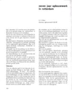Maso signaleert in 1973 dat enkele wijkorganen op deze wijze werken, ‘een proces dat mogelijk is geworden dankzij zeven jaar opbouwwerk’. (Maso ir. S., Zeven jaar opbouwwerk in Rotterdam, Maasmondig 6/8 november 1973)
Het opbouwwerk zal zich in de wijken aansluiten bij de nieuw gevormde bewonersorganisaties. ‘De opbouwwerker, in dienst van de Raad M.W. wordt in veel gevallen gezien als een verlengstuk van de gemeente’, noteert Maso. ‘De Afdeling Opbouwwerk wil zich verzelfstandigen (..), het bestuur van deze zelfstandige instelling voor het opbouwwerk zal o.a. gevormd moeten worden door vertegenwoordigers uit de wijken die een duidelijk engagement met het opbouwwerk moeten hebben.’
De kritische opstelling van de directeur Opbouwwerk naar de wijkraden en deelgemeenten roept weerstand op bij de gemeente.
Er ontstaat een conflict met de gemeente. Bij een reorganisatie van de RMW wordt de functie van directeur Opbouwwerk opgeheven, Maso vertrekt.
Het opbouwwerk werkt begin jaren 70 in nieuwe wijken samen met wijkopbouworganen en in ‘saneringswijken’ met wijkorganen en aktiegroepen. De sturing van het opbouwwerk is top-down, vanuit de Raad van Maatschappelijk Welzijn. Dit botst met het demokratiseringsproces binnen van de afdeling Opbouwwerk. Opbouwwerkers stimuleren ‘het agogisch proces’ dat als gevolg van het optreden van aktiegroepen in wijken kan ontstaan. De PvdA, grootste politieke partij in Rotterdam, is verdeeld over het saneringsbeleid voor oude wijken, over de keuze voor wijkraden of wijkopbouworganen en over het wijkopbouwwerk.
4. Beleids-sociologische kritiek
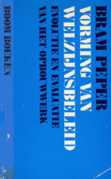De jonge Rotterdamse beleidssocioloog Bram Peper analyseert in een proefschrift uit 1972 de ontwikkeling van opbouwwerk als nieuw onderdeel van overheidsbeleid. (Peper A., Vorming van welzijnsbeleid, evolutie en evaluatie van het opbouwwerk, Boom,1972)
Peper focust op de beleidsdoelstelling voor samenlevingsopbouw van het ministerie, gericht op het tot stand brengen van sociaal-culturele voorzieningen met participatie van bewoners. Daarmee moet een nieuw ‘maatschappelijk middenveld’ tot stand gebracht worden dat in de plaats kan komen van het verouderde verzuilde bestel.
Peper doet ook enkele prikkelende uitspraken over de recente praktijk van het stedelijk opbouwwerk. noot
Het ontbreekt een wijkopbouworgaan aan legitimiteit om behoeften van de bevolking aan welzijnsvoorzieningen te formuleren, aldus de promovendus. Verschillende groepen actievelingen strijden binnen een wijkorgaan om de macht.
De beleidsdoelstelling van opbouwwerk, de democratisering van de samenleving door het bevorderen van participatie van bewoners, is in de ogen van de onderzoeker ‘illusoir’. ‘Wil men werkelijk een serieuze poging doen de participatie in democratische zin te bevorderen, dan rest geen andere weg dan per wijk verkiezingen te organiseren en de wijk een eigen beleidsterrein, c.q. een eigen budget te geven.’
Opbouwwerkers kunnen nuttig werk verrichten met praktische ondersteuning van initiatieven van bewoners in hun woon- en leefomgeving. Peper oppert de mogelijkheid om subsidiegeld direct aan bewonersgroepen te geven in plaats van aan instellingen met onduidelijke doelstellingen.
De toenemende activiteit in oude wijken die de laatste jaren valt te constateren, schrijft Peper in 1972, is voor het overgrote deel buiten het opbouwwerk tot stand gekomen. ‘Spontaan ontstane actiegroepen, wijkcomités zijn zich – zonder ooit van opbouwwerk gehoord te hebben- op eigen kracht met de vraagstukken gaan bezig houden. Zij hebben op eigen wijze hun welzijnsbeleving gedefinieerd en zijn daarbij – zonder zich op voorhand te laten in snoeren door de sociaal-culturele variant van het welzijn die het bijzonder opbouwwerk voor zijn rekening neemt –terecht gekomen op de meer structurele determinanten van het welzijn. Men kan daarbij denken aan: de woningnood (huurcomités), het onderwijs, de beïnvloeding van de stadssanering, die op top-gemeentelijk politiek en bureaucratisch niveau (publieke werken) wordt bepaald. Daarbij steekt het officiële aanbod van het bijzonder opbouwwerk –groenvoorzieningen, speelplaatsen- wel schriel af.’ (pg. 204)
In een kritische bespreking van de studie signaleert Maso dat Peper zich vooral richt op beleidsvorming van het ministerie en geen onderzoek deed naar de recente praktijk van het stedelijk opbouwwerk. ‘Als Peper de situatie in Rotterdam beter bestudeerd had (hij sprak met mij over dit onderwerp het laatste in 1969) dan zou hij geweten hebben dat de officiële wijkorganen in de oude wijken zich, naast verbetering van pleinen, speelplaatsen en wijkcentra, uitgebreid bezig hebben gehouden en nog houden met huurakties, woningverbeteringen, saneringen, de Willemstunnel, het Rottetracée, verkeersproblemen, het probleem van de buitenlandse arbeiders, de prostitutie (Katendrecht).’ noot
Maso heeft kritiek op de keuze van Peper voor wijkraden als het middel om participatie te vergroten. Politieke partijen verliezen aanhang en zijn in saneringswijken bijna niet meer aanwezig. ‘Het wijk- en buurtopbouwwerk tracht via een stuk sociale democratie een aanvulling te geven op het demokratische parlementaire systeem’, aldus de directeur Opbouwwerk.’ (pg. 297)
Peper deed voor zijn proefschrift geen onderzoek naar ‘de spontaan ontstane actiegroepen, wijkcomités, die zich op eigen kracht met de vraagstukken zijn gaan bezig houden’. Als burgemeester van Rotterdam zal hij direct geconfronteerd worden met deze groepen. Hij plaatst bewonersinitiatieven en opbouwwerk in de jaren 80 in een ander perspectief en benadrukt het belang van een ‘sociale democratie’, als onmisbare aanvulling op de ‘representatieve democratie’.
De burgemeester zal over dit onderwerp in 1989 een uiteenzetting geven voor bewoners uit Oud Mathenesse, geflankeerd door opbouwwerker Johan Janssens. Ze bieden in de pauze van het raadsdebat over sociale vernieuwing een boekje aan getiteld De Omkering. Peper zegt het ongelofelijk belangrijk te vinden dat wijkbewoners tot zelforganisatie komen, hun initiatieven zijn een noodzakelijke aanvulling op de representatieve democratie, ‘die iets smals heeft’.
 De verslaggever van Het Rotterdams Nieuwsblad maakt daarvan: Peper: ‘Democratie heeft iets mals’. Voorlichter Goeijenbier rectificeert. ‘Het is een kwestie van articuleren’. (Rotterdams Dagblad 7/12, 12/12 1989)
De verslaggever van Het Rotterdams Nieuwsblad maakt daarvan: Peper: ‘Democratie heeft iets mals’. Voorlichter Goeijenbier rectificeert. ‘Het is een kwestie van articuleren’. (Rotterdams Dagblad 7/12, 12/12 1989)
Peper zet zich in de jaren 70 in voor decentralisatie van het welzijnsbeleid, van rijk naar gemeenten. ‘Een rijks-plan voor bejaardenzorg haalt het initiatief bij mensen weg,’ zegt hij in een commentaar in 2019. Sociale vernieuwing greep terug op de kracht van mensen om dingen te organiseren, zelf de binnentuin bij te houden. ‘Dat functioneerde zo jarenlang in volksbuurten, met duivenverenigingen en allerlei andere clubs. Ik weet uit eigen waarneming hoe mensen dat organiseerden en zich ontwikkelden.’ De opzet van welzijnsvoorzieningen liep hierbij achter. Hij memoreert dat hij ‘aanstichter’ was van Sociale Vernieuwing. Bij de vorming in 1989 van het kabinet Lubbers 3, met Kok, fungeerde het als ‘lijm’ tussen PvdA en CDA.
5. Bewonersakties in Crooswijk en het Oude Westen
In 1969 krijgt Crooswijk een ‘erkend voorlopig Wijkorgaan’. Mevr. Luijendijk, als pedicure bekend gezicht in de wijk, is een van de initiatiefneemsters. Samen met Ted Hoppener richt ze een spreekuur huurdersbelangen op. In het wijkorgaan zitten ook de directeuren van de clubhuizen.
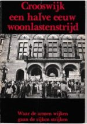In 1970 worden bewoners van Crooswijk en het Oude Noorden geconfronteerd met plannen om de Rotte te dempen voor de aanleg van een autoweg. In het Oude Noorden wordt onder leiding van Corrie Ulenberg een bewonersorganisatie gevormd die strijdt voor een zwembad en behoud van de Rotte. Ze laten hun kinderen zwemmen in de fontein op het Hofplein en gaan met zijn allen in boten de Rotte op.
Lees hier meer.
Bewoners uit Crooswijk en het Oude Noorden trekken in een protestmars naar het stadhuis. Met succes, het plan wordt afgeblazen en het wijkorgaan Crooswijk wordt betrokken bij overleg over nieuwbouwplannen in Rubroek. (Crooswijk, een halve eeuw woonstrijd, Wijkorgaan Crooswijk, Rotterdam1983)
Het jaar daarop protesteren bewoners onder aanvoering van Sjaan Postma tegen de sloop van de Laanzichtstraat: ‘We kenden elkaar al jaren en we waren bang dat ze de hele straat uit elkaar zouden rukken. Daarom hebben we toen gezegd: slopen oké, maar dan willen we wel met de hele straat in het nieuwbouwblok aan de Crooswijkseweg komen’. (pg. 27) . Bewoners krijgen steun van het net geopende clubhuis Arend en de Zeemeeuw en van de pastoor van kerk aan de Goudse Rijweg, Gijs van Wijk.
In 1974 gaat de nieuwe wethouder stadsvernieuwing, Jan van de Ploeg, in overleg met de bewoners, ze krijgen de toezegging dat ze gezamenlijk naar de Crooswijkseweg kunnen verhuizen. Buurtwerker Willem Giezeman mag in 1975 de eerste paal slaan van de nieuwbouw.
Daarna ontbrandt de strijd over de huren van de nieuwe woningen. Gijs van Wijk van het komité voor huurdersbelangen noemt de eerste paal voor 206 woningwetwoningen in Rubroek ‘een schandpaal’. Jan Schot, welbespraakte wijkbewoner, kaderlid van de vakbond van controleurs in de haven, wordt door opbouwwerker Johan Henderson overgehaald mee te doen in het wijkorgaan. Bij een bezoek van Jan Schaeffer aan de wijk zegt hij de staatssecretaris de waarheid: ‘Wat jullie nou doen is ons de stadsvernieuwing weer afnemen. Het water staat niet tot aan onze lippen, nee, er zijn er al een hoop verzopen.’
Crooswijk stapt uit protest tegen de hoge nieuwbouwhuren uit de projectgroep stadsvernieuwing. Het conflict leidt ook tot een wisseling van de wacht binnen het wijkorgaan. Mevr. Luijendijk verdenkt wethouder Wijkaangelegenheden van der Have ervan dat hij het wijkorgaan wil vervangen door een wijkraad, met vertegenwoordigers van politieke partijen. De politieke strijd binnen de PvdA tussen voor- en tegenstanders van wijkorganen en wijkraden wordt ook uitgevochten binnen het wijkorgaan Crooswijk.
Het wijkorgaan Crooswijk, met Schot, Luijendijk, van Wijk, zal trekker worden van de woonlastenstrijd in Rotterdam. Met Stien Weijgertse, Nel Trouwhorst, Jet Heijkoop, Barend Dorchain worden ze gezichtsbepalende personen bij de stadsvernieuwing in Crooswijk.
Het Oude Westen
Bewoners van het Oude Westen protesteren in 1970 tegen lekkende daken en beschimmelde keukens.
De vaak kleine particuliere huiseigenaren hebben jaren geen onderhoud gedaan aan de woningen, in afwachting van sloop van de wijk. In de Saneringsnota van 1969 wordt de sloop aangekondigd van 1500 krotwoningen per jaar in oude wijken. Een werkgroep van architecten stelt hier een het plan tegenover voor behoud van het Oude Westen voor de huidige bewoners, met woningverbetering binnen het bestaande stratenpatroon. Dit Reconstructieplan biedt de basis voor protesten tegen de plannen voor kaalslag van de wijk voor winkels en kantoren.
Studenten van de Akademie voor Bouwkunst maken in 1970 een documentaire over de akties in het Oude Westen. Aan het woord komen vrouwen van de moedergroep van buurthuis Ons Huis, vrijwilliger Wim Noordergraaf van de buurtwinkel (het informatie en adviespunt van de Aktiegroep), aktivist Wouter ter Braake, juridisch adviseur Cor Barendrecht, sociaal raadsman Jan de Waal tevens leadzanger van Het Oude Westen cabaret, architect Pietro Hammel en de ‘in akties van de arbeidersbeweging vergrijsde’ Gerrit Sterkman, voorzitter van de Aktiegroep. (Aktiegroep Oude Westen – jaren 70 )
Bewoners krijgen steun van de buurthuizen Kruiskade en Ons Huis. De moedergroep uit het buurthuis wil beter onderhoud, brandbeveiliging en telefooncellen in de wijk.
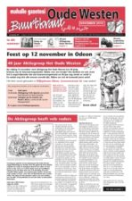De beweging wordt versterkt door protesten van studenten en jongeren, van ‘alles wat links en alternatief’ is, tegen de gemeentelijke PR-manifestatie C(ommunicatie) 70. (De Aktiegroep heeft vele vaders, Jan van den Noort, Buurtkrant Oude Westen nov. 2010)
‘We wensen niet het etiket van wijkorgaan opgeplakt te krijgen’, melden de activisten aan de wethouder van der Pols (Wijkaangelegenheden) in een gesprek over subsidie. Ze zien wijkorganen als inspraakinstituten van de overheid en opbouwwerkers als gemeentefunctionarissen.
De Aktiegroep heeft geen bestuur, hoogste orgaan is de Aktiegroepvergadering. De organisatiewijze en omgangsvormen botsen met de gemeente, zo blijkt uit de Notulen overleg Aktiegroep en wethouder H. van de Pols Wijkaangelegenheden van 16 januari 1970: ‘De gemeente vraagt van de Aktiegroep de spelregels, die in een goed verkeer tussen burgerij en overheid gelden, in acht te nemen. Het gaat niet aan, dat er stencils bij de gemeente komen, die alleen zijn ondertekend met ‘de Aktiegroep Oude Westen’, zonder verdere aanduiding, adres enz. van de persoon of personen, die namens de Aktiegroep van de inhoud van het stencil aangesproken kan (kunnen) worden en met wie door de gemeente contact kan worden opgenomen.’ (Stadsarchief Rotterdam)
Opbouwwerker Wil van Vessem doet in 1970 namens de afdeling Opbouwwerk van de RMW een verkenning naar de ontwikkelingen in het Oude Westen, met de vraag of opbouwwerkondersteuning gewenst en mogelijk is. (Rapport Het Oude Westen, een poging tot analyse van de recente gebeurtenissen in het Oude Westen, W.M.H. van Vessem, 4 mei 1970, Stadsarchief Rotterdam)
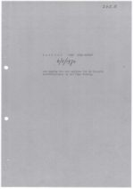Het rapport schetst de gebeurtenissen die plaats vinden in Het Oude Westen in het voorjaar van 1970.
Stafleden van de buurthuizen Kruiskade en Ons Huis stimuleren het ‘aktiegericht optreden’ dat in de wijk op gang komt. Discussies van de Moedergroep van Ons Huis over een nieuwe accommodatie verbreden naar de leefbaarheid van de wijk. Er worden buurtvergaderingen georganiseerd waar honderden bewoners op af komen, noteert van Vessem. ‘Allochtonen-vooral militante jongeren: studenten, kunstenaars, maatschappijkritische jongeren- sinds kortere tijd woonachtig in de wijk overtroffen de autochtonen verre in aantal.’ Bij de volgende bijeenkomst is de opkomst representatiever voor de wijkbevolking, met veel ouderen en jongeren, ‘de middenleeftijdsmoot is ver in de minderheid’. Aanwezig namens het College van B en W is o.a. wethouder van onderwijs van der Ploeg, initiator van een programma voor onderwijsstimulering in oude wijken Onderwijs en Sociaal Milieu OSM. Een werkgroep formuleert eisen naar huiseigenaren, architect Hammel licht het Rehabilitatieplan toe, dr. Lamberts, gemeenteraadslid voor de PvdA, biedt zich aan als adviseur en vertaalt de eisen uit de buurtvergadering naar vragen aan het College. De bijeenkomsten worden voorgezeten door N. Schouten, consulent van de koepel van buurthuisinstellingen N.B.V.
Er komt in 1970 geen duidelijk antwoord van het College op de eis om het plan voor de sanering van Het Oude Westen in te trekken.
De aktie heeft veel bijval gekregen in de wijk, signaleert van Vessem, ‘houdt dit wellicht verband met de samenstelling van de bevolking met z’n grote aantal maatschappij-kritische jongeren?’ Ze merkt op dat veel jongeren als echtparen samen bij de aktie betrokken zijn, ‘een verschijnsel hetwelk ik b.v. in Zuidwijk bij het opbouworgaan niet of nauwelijks aantref’. Ze maakt als opbouwwerker kanttekeningen bij het soms demagogische karakter van de bijeenkomsten maar heeft ook vertrouwen in het proces dat op gang komt, de directeur van Ons Huis verzekerde haar dat participanten elkaar corrigeren en ‘de motieven van deelnemers van de aktie scherp weten te analyseren als hetzij taakgericht, hetzij groepsgericht, hetzij ingegeven door verborgen agenda’s.’
Van Vessem vraagt zich af of er taken liggen voor een opbouwwerker in het Oude Westen. Ze twijfelt en denkt dat het werk overgelaten moet worden aan ‘de instellingen in de wijk die samenlevingshulp als doelstelling nastreven en daartoe over de nodige faciliteiten beschikken’, de buurthuizen.
Opbouwwerker Fred Blokhuizen, komt in 1972 tot de conclusie dat er voor hem geen taak ligt binnen de Aktiegroep: ‘De funktie opbouwwerk uitgevoerd door een betaalde funktionaris van buiten de wijk komende, de funktie van het opbouwwerk in het algemeen kader voor een gehele wijk, wijkopbouwwerk, is in het Oude Westen niet mogelijk. Omdat 1) een zo groot kader op allerlei terrein werkzaam is, dat een extra funktionaris overbodig is, 2) de macht van groepen jonge mensen op het ‘mobiliseren’ van de bevolking zo groot is, dat er voor de opbouwwerker geen kans is deze te doorbreken, tenzij hij dit doet via de bevolking. Dit zou onethisch zijn.’ (Rapportage F. Blokhuizen 1972, Stadsarchief Rotterdam)
Ton Huiskens behoort tot de maatschappij-kritische jongeren die begin jaren 70 in het Oude Westen aktief zijn in de Actiegroep. Hij is ook secretaris van de Rotterdamse jongerenorganisatie voor ontwikkelingssamenwerking, zit in het bestuur van de NOVIB (samen met An Thomassen) en wordt 1973 actief in jongerenorganisatie SJ (Socialistische Jeugd).
Huiskens studeert op de Sociale Academie, maar wil begin jaren 70 geen opbouwwerker worden in het Oude Westen. ‘Er was eerst een verandering nodig van de stadspolitiek’, zegt hij terugkijkend. De macht van de centraal geleide diensten die van Rotterdam een autovriendelijke Amerikaanse stad wilden maken moest worden gebroken. Directies van woningcorporaties vonden grote groepen bewoners van oude wijken te asociaal om te huisvesten in de keurige naoorlogse nieuwbouw.
Er was een brede beweging bezig met een nieuwe stadspolitiek, zegt Huiskens. Hij kan enige ergernis niet verhullen als ‘brave opbouwwerkers’ radicaal links noemen als drijvende krachten achter de actiegroep. In de actiegroep vergaderden mensen uit de wijk, zoals de latere PvdA raadsleden Jan Riezenkamp en Eric Bakema, extern deskundige was dr. Lamberts. In de actiegroep zaten ook mensen van de KEN, zoals Wouter ter Braake. ‘Maar de actiegroep was geen mantelorganisatie van deze splinters.’
In de periode 1969-1975 was niet het opbouwwerk de relevante factor, stelt Huiskens, het opbouwwerk voegde zich in een nieuwe werkelijkheid.
In 1975 wordt Huiskens door bewoners van Delfshaven gevraagd om daar opbouwwerker te worden. ‘Ik vond toen, na het aantreden van wethouder van der Ploeg, dat ik mijn verantwoordelijkheid moest nemen en mee vorm moest geven aan een nieuwe praktijk en een nieuwe stadspolitiek’.
De Aktiegroep organiseert voor de raadsverkiezingen van 1974 een debat met de progressieve politieke partijen. Ze onderschrijven de eisen van het Oude Westen: de wijk houdt een woonbestemming, er komt een projektgroep stadsvernieuwing waarin de bewoners de meerderheid hebben, huiseigenaren maken geen deel uit van de projektgroep.
Opbouwwerker Toon Lambregts, vanaf 1976 werkzaam in het Oude Westen, schetst in 1980 bij het tienjarig bestaan van de Aktiegroep de werkwijze en organisatiestructuur die zich in de jaren 70 ontwikkelt. Centraal staat de tweewekelijkse Aktiegroepvergadering waar de werkgroepen rapporteren over hun activiteiten. De Aktiegroepvergadering is de plenaire bijeenkomst van wijkbewoners waar de ontwikkelingen worden besproken en besluiten worden genomen. Een Agendacommissie bereidt deze vergaderingen voor en stelt de werkzaamheden vast van de ‘betaalde krachten’ (extern deskundigen, sociaal begeleiders, opbouwwerker).
Een van de betaalde krachten heeft een ondersteunende rol naar de voorbereidingsgroep. (Tien jaar Aktiegroep Oude Westen, Toon Lambregts, Bijlage bij Jaarverslag IOR 1981)
In oude wijken ontstaat begin jaren 70 protest tegen de saneringsplannen. Het wijkorgaan Crooswijk gaat de confrontatie aan met het gemeentebestuur na strijd tussen verschillende stromingen binnen de PvdA, in de Aktiegroep Het Oude Westen zijn veel maatschappij-kritische studenten actief die ‘de huisjes onder de huurwaarde’ in de verkrotte wijk bewonen. Ervaren kaderleden uit de arbeidersbeweging versterken de beweging. De akties worden ondersteund door club- en buurthuizen.
Opbouwwerkers sluiten zich aan bij de nieuw gevormde wijkorganen en bewonersorganisaties die gaan optreden als belangenorganisaties voor bewoners bij de woningverbetering in de wijk.
6. Stadsvernieuwing is democratiseringsproces
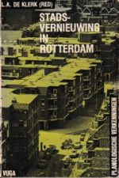Van der Ploeg wordt na de verkiezingen van 1974 wethouder Volkshuisvesting en stadsvernieuwing in het nieuwe PvdA College. Hij sluit een overeenkomst met de Aktiegroep Het Oude Westen: het Rehabilitatieplan wordt basis voor stadsvernieuwing, de Aktiegroep krijgt een centrale plek in de projectgroep stadsvernieuwing, met het recht op ondersteuning door ‘eigen gekozen deskundigen’. Voorbeeld is de samenwerking van de aktiegroep met architecten bij het maken van het eigen Rehabilitatie-plan voor de wijk. Bewoners moeten deskundigen kunnen aanstellen waarin zij vertrouwen hebben, aldus de wethouder. Dit kunnen ook ervaren bewoners zijn en ‘de groenteboer op de hoek’. Deze ‘extern deskundigen’ krijgen een tijdelijk contract van een half jaar, de samenwerking kan eenvoudig beëindigd worden als bewoners dat wensen of de klus geklaard is. (Van der Ploeg J.G. (1982), Naar een stadsvernieuwingsbeleid; in: Klerk L.A. de (red.) (1982) Stadsvernieuwing in Rotterdam.
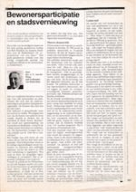Stadsvernieuwing wordt voor Van der Ploeg ook een democratiseringsproces. (J.G. van der Ploeg (1983) Bewonersparticipatie en stadsvernieuwing) Van der Ploeg schrijft in 1983, negen jaar na het begin van stadsvernieuwing: ‘Democratie is een mogelijkheid om bestuurders en ambtenaren in de gaten te houden, hen te controleren, over hun schouder mee te kijken naar wat ze doe en nalaten. (..) Het vraagt om bestuurders en ambtenaren die uit het gemeentehuis durven stappen en naar de buurten te gaan en het gesprek -soms de ruzie- aan te gaan.’ Het vraagt deconcentratie van het ambtelijk apparaat naar de buurten toe met projectgroepen van ambtenaren en bewoners. ‘In die gevallen dat ambtenaren en bewoners het niet eens worden (dat gebeurt maar zelden) beslist het politiek bestuur.’ Hij werpt de vraag op of vertegenwoordigers van de bevolking wel echt representatief zijn. ‘Meestal wel, al behoren ze vaak tot politieke minderheidsgroepen. Soms niet: dan vallen ze snel door de mand, want de bevolking kijkt ook over hun schouders mee.’ Hij concludeert dat op deze wijze directe democratie en representatieve, politieke, democratie complementair zijn. noot
De archieven van bewonersorganisaties zijn te vinden in het Stadsarchief Rotterdam.
Historicus dr. J. van den Noort kreeg in 1997 opdracht van gemeente en stadsarchief om de overdracht en ordening ter hand te nemen van deze archieven. Dat liet op zich wachten. Van den Noort: ‘De archieven van de bewonersorganisaties zijn historisch gezien minstens zo interessant als de archieven van de projectgroepen stadsvernieuwing. Helaas zijn ze veel kwetsbaarder en hebben ze doorgaans een grotere omvang. Onze belangstelling voor de geschiedenis van de Rotterdamse stadsvernieuwing is groot, maar anderhalve kilometer papier is wel wat veel van het goede.’ In 2000 was het project voltooid.
De toegangen tot de archieven van bewonersorganisaties staan op de website van Jan van den Noort.
Over de opstelling van bestuurders bij de strijd voor stadsvernieuwing en democratisering in de jaren 60 en 70 zegt hij: ‘Het is nu eenmaal de tragiek van veel politici en ambtenaren dat ze op een te laat moment op de barometer kijken. Voor hen schijnt de zon als het al lang regent.’ Van der Ploeg maakt een ommezwaai. Hij maakte deel uit van een College dat in 1969 het plan op tafel legt voor sanering van de oude wijken en wordt in 1974 grondlegger van de stadsvernieuwing. Verandert hij van regent in aktivist? Van der Ploeg zelf plaatst zijn opstelling in een historische ontwikkeling: ‘Na de tweede wereldoorlog ontstaat een nieuwe democratisering die in de jaren zestig heel duidelijk tot uiting komt.’ noot James Kennedy (1995/2017) Nieuw Babylon in aanbouw, Nederland in de jaren zestig, analyseert de rol van autoriteiten bij de protestbewegingen in de jaren zestig. Ze boden vaak vrij baan aan de vernieuwingsbeweging. Dat was niet alleen uit politieke opportuniteit, maar ook omdat de regenten in de democratiseringsbeweging van de jaren 60 idealen herkenden die zij zelf nastreefden voor het Nederland van na de oorlog. Deze analyse kan ook licht werpen op ‘de ommezwaai’ van Jan van der Ploeg in 1974.
In de Verordening Organisatie Stadsvernieuwing, de VOS, wordt ‘het coalitie-model’ en de positie van bewonersorganisatie in de projektgroep vastgelegd. A. Liedorp, hoofd van de secretarisafdeling Ruimtelijke Ordening Stadsvernieuwing en Volkshuisvesting ROSV, beschrijft de uitgangspunten van het demokratiseringsbeleid dat zich in de jaren 70 ontwikkelde: noot
- ‘Politieke erkenning van het belang van de zittende bewoners via voorrangspositie bij inspraak: projectgroep van ambtenaren en bewoners met bewoners in de meerderheid, principe van bouwen voor de buurt met sociale woningbouw.
- Open proces van beleidsvoorbereiding in de wijk: met gemandateerde ambtenaren van diensten in de wijk, openbaarheid van vergaderingen, bewoners als opdrachtgever bij nieuwbouw en verbouw
- Rechtstreekse en openbare toegankelijkheid tot gemeentebestuur: raadscommissie treedt op als Stuurgroep Stadsvernieuwing, diensten en bestuurders kunnen in het openbaar ter verantwoording worden geroepen.
- Opstelling van wijkorganen als bewonersvakbond: belangenbehartiging staat voorop, via een combinatie van onderhandelen en actie voeren, erkenning van deze ‘bewonersvakbonden’ als gesprekspartner, ieder met behoud van eigen verantwoordelijkheid (coalitiemodel), financiering door overheid van deskundigen die werken in opdracht van de bewonersorganisatie.’
Deconcentratie van het ambtelijke apparaat met vestigingen in de wijken is van veel grotere betekenis voor democratisering dan het deelgemeentebestel, concludeert Liedorp. Het democratiseringsbeleid in de stadsvernieuwing richt zich op deelname van bewoners(organisaties) aan de beleidsvoorbereiding, door coalitievorming met het ambtelijke deel van de projectgroepen. Via deconcentratie van gemeentelijke diensten kunnen diensten aansluiten bij ‘sociale kaders’ in de wijk. En bewoners kunnen zo directe invloed uitoefen op gemeentelijk beleid dat hen raakt.
Met de extern deskundigen en sociaal begeleiders (verantwoordelijk voor de begeleiding van de herhuisvesting van bewoners), creëert de wethouder stadsvernieuwing een nieuw type bewonersondersteuning, naast het opbouwwerk. Er vindt een afbakening plaats van domeinen. Van der Ploeg ontwikkelt met de projectgroepen stadsvernieuwing een vorm van directe democratie, tegenover wijkraden en deelgemeenten. De PvdA is verdeeld, er ontstaat strijd over de verhouding van de projectgroep stadsvernieuwing en de deelgemeente. De regie voor het opbouwwerk blijft bij de wethouder Wijkaangelegenheden en de RMW, ook de zeggenschap over het opbouwwerk wordt inzet van strijd.
7. Opbouwwerker als beroepskracht
Opbouwwerkers gaan in wijken samenwerken met bewonersorganisaties, maar ze vallen beleidsmatig onder de wethouder Wijkaangelegenheden. Bij de reorganisatie van de RMW in 1975 en de vorming van het Instituut Opbouwwerk Rotterdam ontstaat discussie over de positionering van het opbouwwerk. Het IOR kiest voor een onafhankelijke positie, de gemeente wenst ‘overwegende invloed’ te houden op het opbouwwerk. Partijen staan tegenover elkaar en de gemeente stelt in 1975 een vacaturestop in voor opbouwwerk.
Gijs van Wijk wordt, met Jo den Haan (Vreewijk) trekker van het Komitee Behoud Opbouwwerk dat vertegenwoordigers van wijkorganen en bewonersorganisaties vormen.
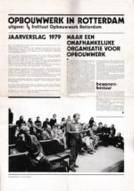In 1979 besluit de gemeenteraad tot het onderbrengen van het opbouwwerk in een zelfstandige stichting, met een bestuur dat in meerderheid wordt aangewezen door bewonersorganisaties. De financiering van het opbouwwerk gaat lopen via de nieuw ingevoerde (wijk)welzijnsplanning. (Naar een onafhankelijke organisatie voor opbouwwerk, IOR 1979).
Het IOR heeft de democratie ook verwezenlijkt in eigen kring, via een ‘teamconcept’ met een horizontale taakverdeling. Jan Vaessen wordt door collega’s gekozen tot ‘veldcoördinator’ en liaison tussen team en directie. Het stedelijk team zal in de jaren 70 worden aangevuld met Wil van Vessem, Rob Rapmund, Harry Kramer, Peter van der Neut en Adri Kluwen.
Opbouwwerkers gaan in discussie over de samenwerking met bewonersorganisaties en over hun vak. Is een opbouwerker een ‘vrijgestelde’, een betaalde kracht die geen andere positie inneemt dan andere actieve bewoners, of is een opbouwwerker een ‘beroepskracht’, met een eigen professionele verantwoordelijkheid? Welke ruimte is er voor verschillen van opvatting binnen een opbouwwerk-instelling, wat is de ‘bandbreedte’ waarbinnen een opbouwwerkinstelling kan opereren?
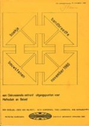(Bouwstenen bandbreedte, diskussienota omtrent uitgangspunten voor methodiek en beleid, Rapmund Rob red., Instituut Opbouwwerk Rotterdam, 1974/1980)
Naast ‘vrijgestelde’ en ‘beroepskracht’ worden de rollen onderscheiden van ‘instellingswerker’ (met de instelling als enige opdrachtgever) en van ‘onafhankelijke intermediair’ (zelfstandig werkende professional).
Uit de ‘overzichtsfoto’ in 1979 blijkt dat de opbouwwerkers van het IOR kiezen voor de posities van vrijgestelde en beroepskracht. ‘De opbouwwerker van het IOR werkt vanuit een positie die onder spanning staat tussen de posities van vrijgestelde en van beroepskracht’, concludeert de werkgroep Bandbreedte. ‘Dat betekent dat bewonersgroepen opdrachtgever zijn, naast een methodies/werkinhoudelijke sturing vanuit de opbouwwerkinstelling.’
De opbouwwerker als beroepskracht staat model bij de ontwikkeling van het IOR als professionele organisatie. Professionals en bewoners hebben daarin ieder hun eigen verantwoordelijkheid: opbouwerkers voor het ‘hoe’ van het werk, bewoners voor het ‘wat’. Met deze formule worden verhoudingen geschapen waarin de professionele verantwoordelijkheid van de opbouwwerker een eigen ruimte krijgt en bewoners invloed kunnen uitoefenen op het werkprogramma van de opbouwwerker.
Een opbouwwerker als beroepskracht verantwoordt zijn/haar werk naar bewoners en naar collega’s. De zgn. ‘subteams’ van opbouwwerkers waarvan iedere opbouwwerker verplicht (!) deel uitmaakt is het forum om zich te verantwoorden als professional naar collega’s en instelling.
De teams van opbouwwerkers hebben ook een verantwoordelijkheid bij het aanstellen van nieuwe opbouwwerkers. Sollicitatiecommissies bestaan uit opbouwwerkers en bewoners. Spelregel is dat overeenstemming nodig is over de aan te stellen kandidaat binnen de sollicitatiecommissie tussen professionals (is de kandidaat een vakman/vakvrouw?) en bewoners (kan de kandidaat luisteren naar bewoners?).
De benoeming van een nieuwe opbouwwerker wordt een belangrijke passage in de ontwikkeling van een bewonersorganisatie, het is een moment waarop wordt stilgestaan bij de sterke en zwakke kanten van de organisatie en bij het programma voor de toekomst. Het wordt een leerproces waarin inhoud wordt gegeven aan de zeggenschap van bewoners over het opbouwwerk.
Het IOR fungeert als uitvalsbasis waarop opbouwwerkers kunnen terugvallen bij conflicten en biedt steun bij het scheppen van werkbare condities voor opbouwwerk in de wijk. Het Instituut Opbouwwerk ‘moet zorgen dat opbouwwerk mogelijk is’, in de woorden van Dries Willems.
Er ontstaat grote overeenstemming binnen de organisatie dat opbouwwerkers een onafhankelijke positie dienen in te nemen ten opzichte van politieke groeperingen. Stelregel wordt dat een opbouwwerker in zijn werkgebied niet aktief kan zijn voor een politieke partij. Aanleiding voor de discussie is een oproep bij gemeenteraadsverkiezingen van een aantal ambtenaren van projectbureaus en bewonersondersteuners om op de CPN te stemmen. Partij-politieke activiteiten kwamen niet voor in de begin periode van het opbouwwerk, aldus Jan Vaessen. ‘Of het moest zijn dat Cees van Wijk, de latere Rotterdamse PvdA-voorzitter, op het Afrikaanderplein PvdA folders in de brievenbussen stopte.’
Opbouwwerk is in de beginjaren vooral een mannenzaak. Wil van Vessem is de eerste vrouwelijke opbouwwerker (het woord ‘opbouwwerkster’ zal niet beklijven). In Lombardijen zet ze zich in voor de ‘Ontplooiers’, de vrouwenorganisatie in de wijk. ‘Huisvrouwen’ doen in de jaren 60 en 70 mee aan VOS-cursussen, als opstapje voor deelname aan activiteiten in de wijk en het volgen van een opleiding. De ‘admina’s’, administratief ondersteuners van wijkorganen, zijn vaak afkomstig uit de wijk en worden steun en toeverlaat binnen de organisatie. Veel vrouwen gaan binnen bewonersorganisaties een leidende rol vervullen. In de jaren 70 neemt het aantal vrouwen in het opbouwwerk toe, begin jaren 80 vormen ze een eigen opbouwwerkteam onder leiding van Nel ten Boden.
Bewonersorganisaties eisen in de jaren 70 van de gemeente dat opbouwwerkers werken op de agenda van bewoners. Het IOR ontwikkelt zich tot een professionele instelling voor opbouwwerk waarin bewoners opdrachtgever worden en opbouwwerkers onderling in de kring van vakgenoten het werk van collega’s toetsen.
8. Lappendeken
Vijftig jaar nadat hij startte als wijkopbouwwerker in Alexanderpolder, blikt Jan Vaessen terug op de beginperiode van het opbouwwerk. Vaessen is van 1968 tot 1995 werkzaam bij het opbouwwerk in Rotterdam. Eind jaren 60 als opbouwwerker en ‘veld-coördinator’, daarna als stafmedewerker Personeel en Organisatie van de afdeling Opbouwwerk van de RMW, later het Instituut Opbouwwerk Rotterdam IOR. Hij vervult deze functie ook binnen het Rotterdams instituut bewonersondersteuning RIO, de instelling die in 1988 wordt gevormd uit de fusie van opbouwwerk en bewonersondersteuning.
De eerste opbouwwerkers in Rotterdam belandden in een ‘lappendeken’, zegt Vaessen. ‘Bewonersorganisaties’ vormden eind jaren 60, begin jaren 70 een bont patroon. Organisaties hadden een heel verschillende structuur en cultuur, van autoritaire wijkbestuurtjes tot open bewonersinitiatieven.’
De SWO’s met vertegenwoordigers van wijkinstellingen, verenigingen en geïnteresseerde bewoners, waren een succes. Er was eind jaren 60 in Alexanderpolder veel animo was om mee te doen aan activiteiten in de wijk. ‘De onderwijzers en politieagenten die in de nieuwe wijk kwamen wonen waren mensen met ideeën, ze wilden iets.’ Er meldden zich altijd ook genoeg mensen voor vakantieactiviteiten. Een succes werden acties tegen de vernieling van plantenperken rond flats, het vandalisme stopte toen bewoners zelf de perken gingen aanleggen en onderhouden.
De aktiegroepen die begin jaren 70 in een aantal binnenstadswijken ontstonden keerden zich vaak tegen wijkorganisaties die waren opgezet op initiatief van overheid en opbouwwerk. ‘De methoden van eisen stellen, demonstratie en aktie die werden gehanteerd stonden ook in contrast met de op overleg georiënteerde wijkorganen.’
De akties in het Oude Westen en in Crooswijk hadden een grote en positieve invloed op de ontwikkeling van het opbouwwerk, ook al moesten aktivisten in het begin niet veel hebben van het opbouwwerk dat werd aangemerkt als ‘ingekapseld’.’
‘Vanaf het begin zagen we als opbouwwerkers de beperkingen van de gemeentelijke wijkorganen bij het organiseren van bewoners op hun belangen, maar we hadden ook bedenkingen bij het soms partijpolitieke, bevoogdende karakter van sommige acties van huurderscommissies geleid door radikaal-linkse groeperingen als KEN, KORO en SP.’
De eerste groep opbouwwerkers van de afdeling Opbouwwerk van de RMW had heel verschillende achtergronden en oriëntaties. ‘Maar over twee dingen waren we het eens. Wijkbewoners en hun organisaties moesten bepalen waaraan we gingen werken. Daartoe werden in de wijken ‘verantwoordingskaders’ gevormd, bewoners kregen ook een stem bij het aanstellen van opbouwwerkers. Tweede uitgangspunt was dat een opbouwwerker een eigen professionele verantwoordelijkheid heeft voor zijn/haar methode van werken.’
‘Hoe onaf ook’, concludeert Vaessen, ‘de contouren op deze punten werden in de beginjaren ontwikkeld, ondanks de lappendeken aan werkkaders in de wijken en de verscheidenheid aan opbouwwerkers. Op deze contouren kon de organisatie zich ontwikkelen tot de succesvolle stedelijke instelling die het in de jaren 80 en begin jaren 90 werd.’
Juni 2019